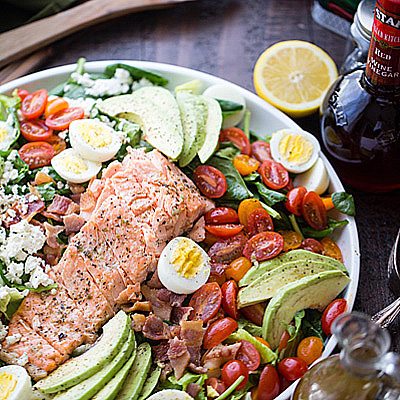

Salmon Cobb Salad

Salmon Cobb Salad is a modern spin on the classic American Cobb salad. We swapped chicken for salmon which pairs so well with the cilantro lime dressing. This cobb salad recipe is fresh, healthy, and gets RAVE REVIEWS!
- Buttermilk
- Mayonnaise
- Minced shallot
- Chopped fresh dill
- Lemon juice
- Salt
- Whisk buttermilk, mayonnaise, shallot, dill, lemon juice, and together in a bowl until dressing is smooth. Then refrigirate.
- Mix lettuce, bacon, avocado, eggs, and salmon together in a bowl. Add dressing and toss until coated. Season with black pepper.